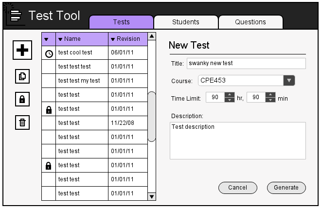

A user can manage tests through the Test Directory menu.
Figure 1: Test directory.
In the Test Directory, the instructor presses the large + button to show
the New Test menu.

Figure 1: New Test menu.
The Course field details which course the test falls under.
The Time Limit field details the given time limit for a test. If the time remains zero, there is no time limit.
After setting the new test's properties, the instructor will click Generate to add the test to the directory, or click Cancel otherwise.
(Alternatively, if the instructor wishes to create a copy of an existing test,
the instructor may select one or multiple tests from the directory, and then
click Copy to create copies of the selected tests.)
2.6.2. Changing Test Properties
The instructor may edit a test's properties by going to the Test Directory,
selecting a single test, then selecting Properties.
Figure 2: Properties menu.
All properties are the same as those listed in section 2.6.1, test creation.
Once the instructor finishes making changes, the instructor clicks Save to
commit to the changes, or Cancel to cancel the changes.
2.6.3. Changing Test Questions
2.6.4. Publishing a Test
In the Test Directory, the user selects a single test, then selects
Publish.
Figure 3: Publish menu.
The user can then commit to the publish by clicking Publish, or cancel with Cancel.
At this point, selected students can take the given test. In the directory,
published and ongoing tests are marked with a clock icon.
2.6.5. Locking Tests
A user may decide to lock a test to prevent it from being edited or published.
In the Test Directory, the user selects one or more tests, then clicks on the Lock button, represented by a lock. A lock icon will appear beside the given tests in the directory.
Locked tests can be unlocked by following the same process. If a user selects
both locked and unlocked tests, Test Tool will resort to locking first.
2.6.6. Deleting Tests
In the Test Directory, the instructor selects one or multiple, then selects
the Delete button represented by the trash bin.
Figure 4: Deletion Confirmation.
The user then selects Yes to delete the selected tests, or
Cancel to cancel the deletion.